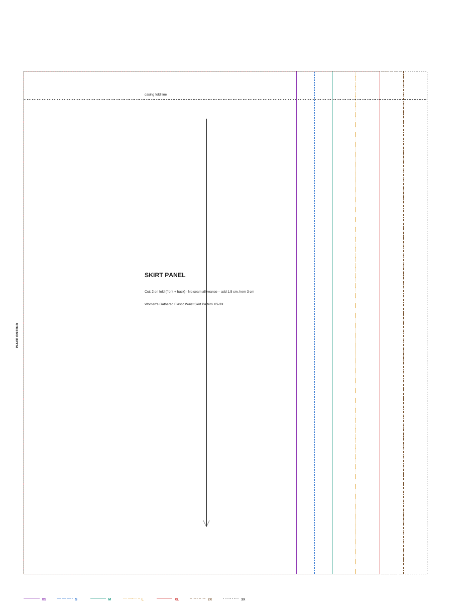

Schnittmuster Gummizugrock (Damen) XS-3X
Größen XS–3X ineinander · ohne Nahtzugabe · A4/Letter oder A0

Maßtabelle (Körpermaße)
| Größe | Brust | Taille | Hüfte | Hüfttiefe |
|---|
| XS | 80 cm / 31.5" | 62 cm / 24.4" | 88 cm / 34.6" | 20.0 cm |
| S | 86 cm / 33.9" | 68 cm / 26.8" | 94 cm / 37.0" | 20.5 cm |
| M | 92 cm / 36.2" | 74 cm / 29.1" | 100 cm / 39.4" | 21.0 cm |
| L | 100 cm / 39.4" | 82 cm / 32.3" | 108 cm / 42.5" | 21.0 cm |
| XL | 108 cm / 42.5" | 90 cm / 35.4" | 116 cm / 45.7" | 21.5 cm |
| 2X | 116 cm / 45.7" | 98 cm / 38.6" | 124 cm / 48.8" | 22.0 cm |
| 3X | 124 cm / 48.8" | 106 cm / 41.7" | 132 cm / 52.0" | 22.0 cm |
Nach der Hüfte wählen. Gesamtweite = (Hüfte + 4 cm) × 1,5. Gummi = Taille − 5 cm. Länge 60 cm. Gummi: XS 57 · S 63 · M 69 · L 77 · XL 85 · 2X 93 · 3X 101 cm.
Bevor du anfängst
- Der einfachste Rock überhaupt: zwei Rechtecke, ein Gummizug und ein Saum. Kein Reißverschluss, keine Abnäher. Länge 60 cm plus Tunnel.
- Ohne Nahtzugabe: 1,5 cm an den Seitennähten und 3 cm am Saum zugeben.
- Stoffe: Batist, Popeline, Viskose, Leinen, Musselin.
Drucken
- In 100 % / Originalgröße drucken, Testquadrat auf Seite A1 prüfen.
- Seiten zusammenkleben oder A0 im Copyshop drucken. Tipp: Das Rechteck kannst du auch direkt mit den Maßen auf den Stoff zeichnen.
Größe wählen
Nach der Hüfte wählen: Die Gesamtweite ist Hüfte + 4 cm mal 1,5, damit der Rock über die Hüfte gleitet und weich fällt. Den Gummi auf Taille minus 5 cm zuschneiden (XS 57 · S 63 · M 69 · L 77 · XL 85 · 2X 93 · 3X 101 cm).
Du brauchst
- Stoff: 1,4 m bei 140 cm Breite für XS–L, 1,8 m für XL–3X
- 3 cm breiter, weicher Gummi, Sicherheitsnadel
Nähschritte
- 2 Rockteile im Bruch zuschneiden.
- Beide Seitennähte schließen, Kanten versäubern.
- Oberkante 1 cm umbügeln, dann an der Tunnelbruchkante nochmals. Knappkantig absteppen, 5 cm offen lassen.
- Gummi mit der Sicherheitsnadel einziehen, Enden 2 cm überlappen und zusammennähen. Öffnung schließen.
- Kräuselung gleichmäßig verteilen, anprobieren, 3 cm doppelt umgeschlagen säumen.
Ideen
- Aufgesetzte Taschen, Bindegürtel oder Rüsche am Saum ergänzen.
- Für mehr Weite Faktor 2 nehmen (Hüfte + 4 cm mal 2).
- Kinderversion: gleiche Methode mit der Hüftweite des Kindes.
© AureliaVenn · Privater Gebrauch und kleine handgemachte Mengen. Schnittdateien bitte nicht weitergeben oder verkaufen. Mit Software nach einer Standard-Maßtabelle konstruiert.